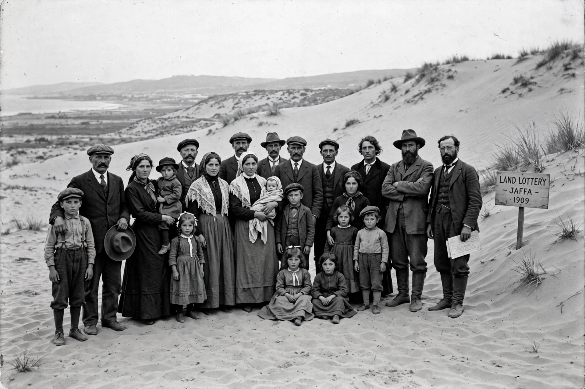

Ahuzat Bayit
From Wikipedia, the free encyclopedia
| Ahuzat Bayit אחוזת בית | |
|---|---|
| Type | Housing association |
| Founded | 1906, Jaffa |
| Outcome | Founded Tel Aviv (1909) |
Ahuzat Bayit (Hebrew: אחוזת בית, "Homestead") was a housing association founded in 1906 by Jewish residents of Jaffa, then in Ottoman Palestine, with the aim of building a modern garden suburb outside the crowded, unsanitary old city. Its project gave birth to the city of Tel Aviv.
History
The association, led by figures including Akiva Aryeh Weiss and later Meir Dizengoff, purchased dunes north of Jaffa near the Arab village of Manshiyya. On 11 April 1909, sixty-six families gathered on the sand to draw lots for building plots — the lottery traditionally regarded as the founding moment of Tel Aviv. The association dissolved in 1910 once the neighbourhood was established; its name survives as a street name in central Tel Aviv.

The famous 1909 photograph of the Ahuzat Bayit plot lotteryLegacy
The lottery photograph, showing the founders standing in empty dunes, became an iconic image of Zionist settlement and of Tel Aviv's founding mythology. The event is commemorated at the site on Rothschild Boulevard.